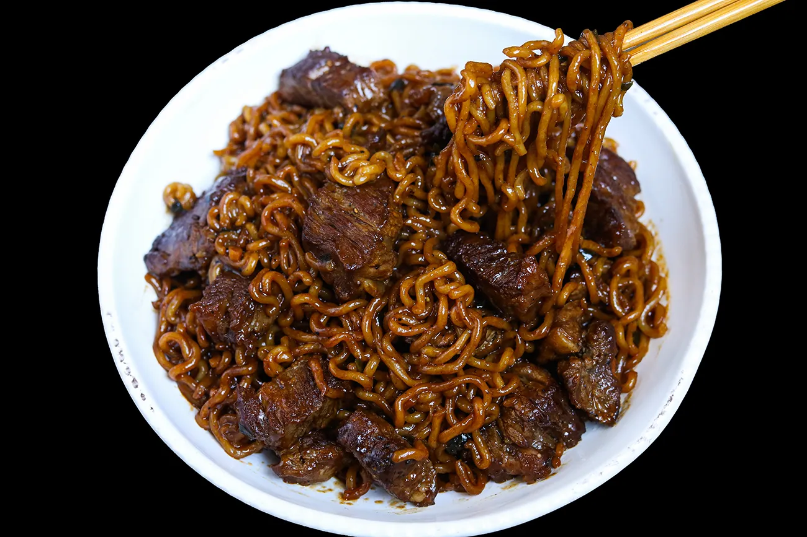

Chapaguri

Description
Chapaguri is a popular Korean instant noodle dish that serves as a perfect cheat dinner.
Made famous by the Oscar awarded film "Parasite", Chapaguri is a internet phenomenon.
You've never had ramen like this before!
Ingredients
- 1 pack of Neoguri ramen
- 1 pack of Chapagetti ramen
- 2 tablespoons cooking oil
- 12 oz beef steak, ribeye recommended
- 1/2 teaspoon garlic salt
- 1/4 teaspoon black pepper
- 1 teaspoon unsalted butter
Directions
- Bring enough water to boil to cook 2 packages of Korean instant ramen. Heat a large skillet over high heat.
Drop both noodles and dehydrated vegetable mixture (no seasoning package yet!) into boiling water and cook for 3 to 4 minutes.
- Meanwhile, add steak chunks into the preheated skillet and sprinkle garlic salt and black pepper.
Cook the steak and sear them evenly all sides, about 2 to 3 minutes.
- Now, add cooked noodles into the steak along with both seasoning packages and butter.
Add 1/2 to 3/4 cup of the ramen noodle water into the skillet and mix everything together, until everything is well combined, about 1 minute.
Add 2 tbsp more ramen noodle water as needed. Transfer to a serving bowl and enjoy!